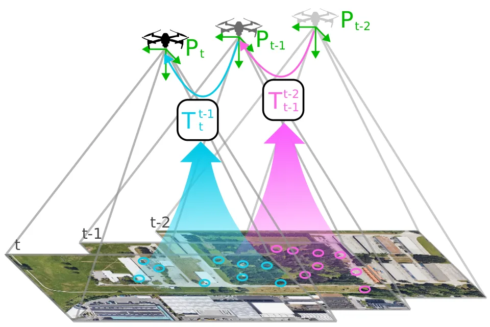
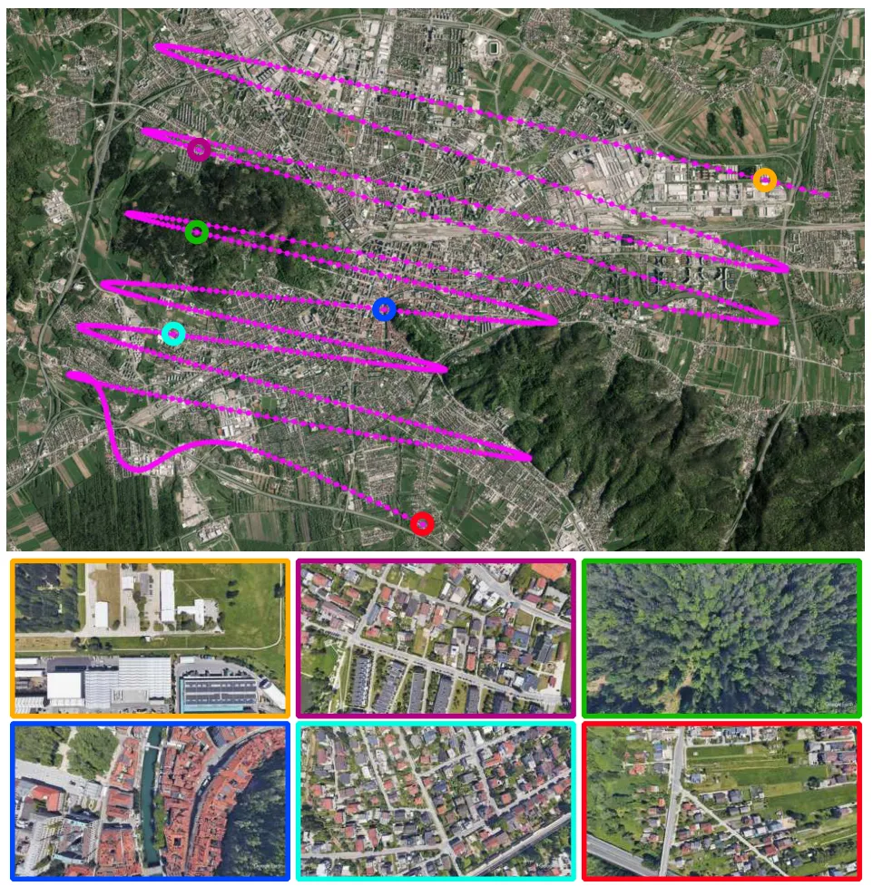
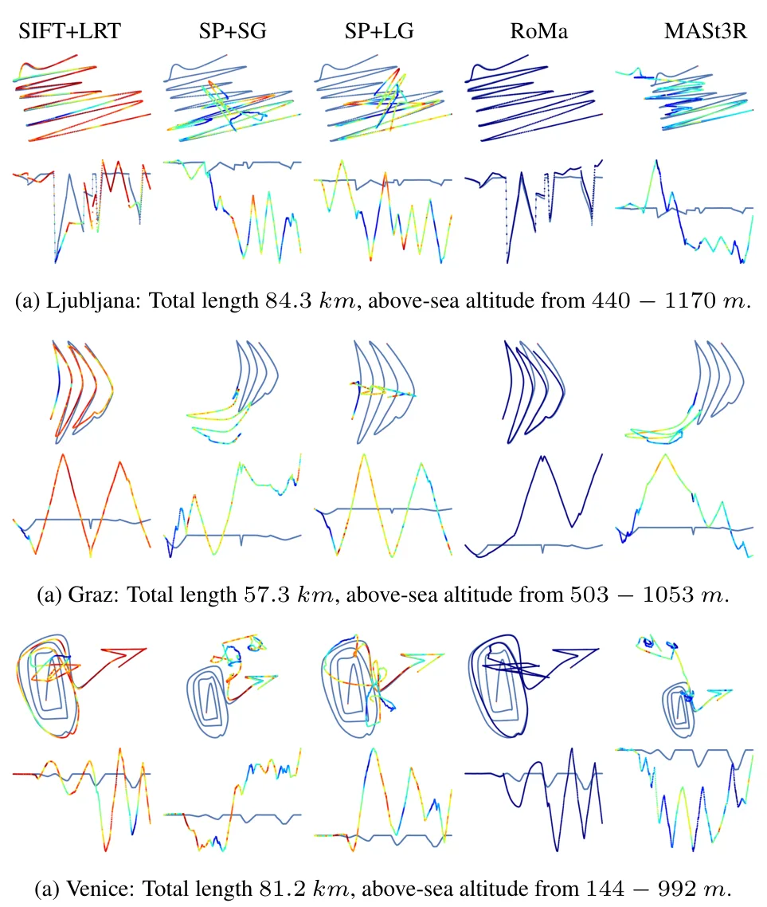
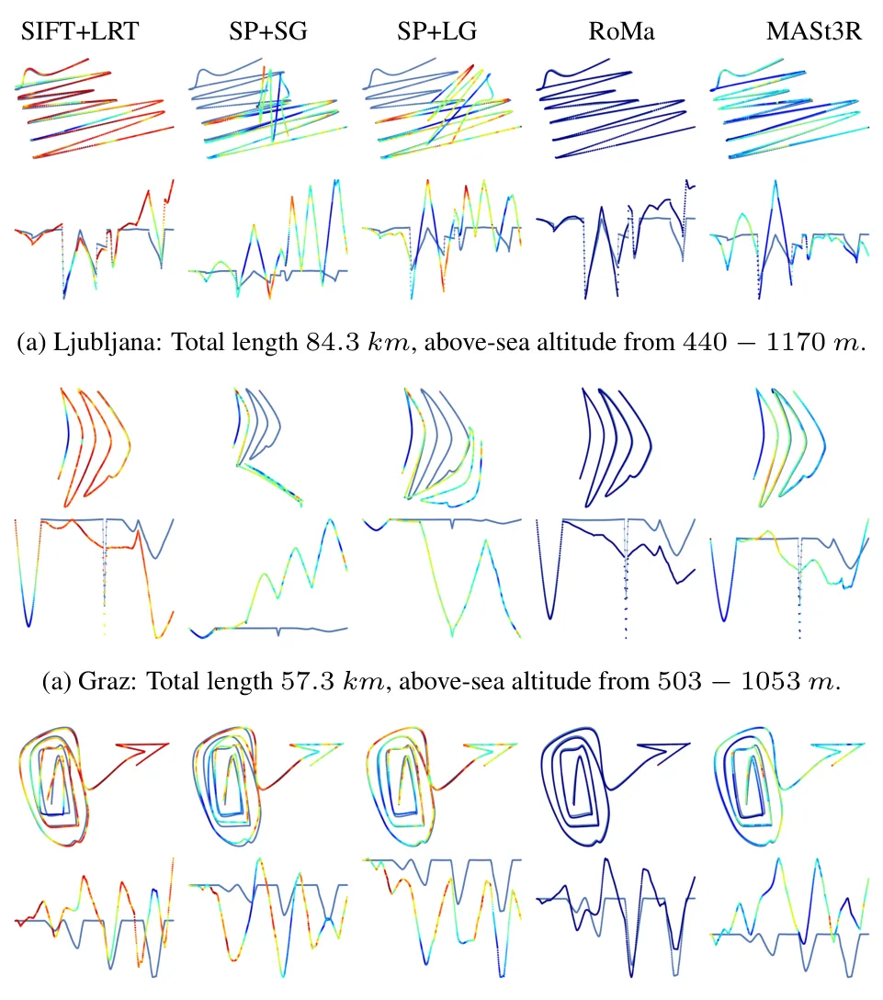
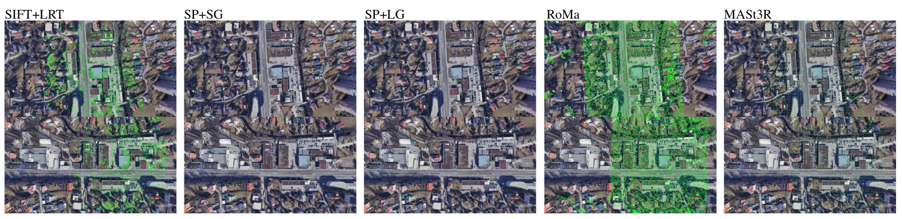
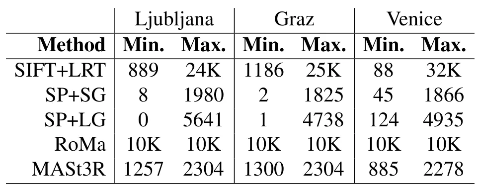
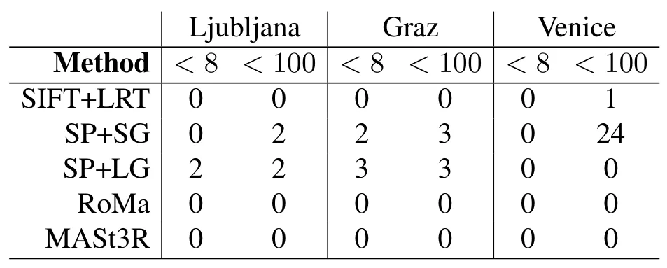
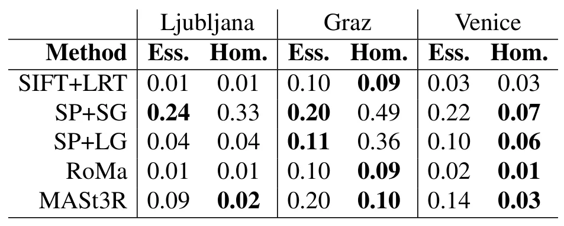
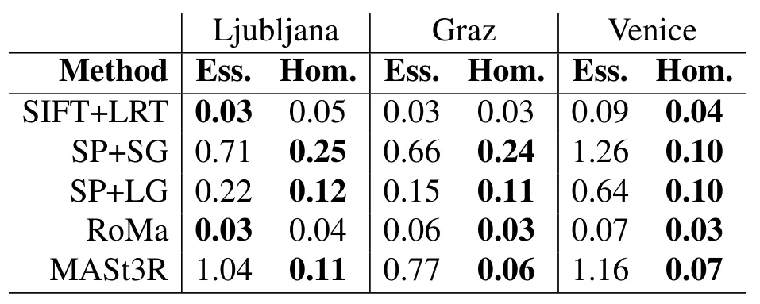

面向无人机视觉里程计的图像匹配方法评测Evaluation of Image Matching Methods for Visual Odometry on UAVs
对视觉里程计前端选型有直接工程价值，并涉及 GNSS 拒止场景；但实验主要基于合成数据，跨平台、真实飞行和不同运动/纹理退化条件下的结论仍有限。
一句话工作总结
把现代图像匹配器放进 UAV VO 管线比较，提示经典 SIFT 在部分场景仍具竞争力。
摘要
论文研究近期深度学习图像匹配器在无人机视觉里程计中的实际表现，使用朝下相机和合成数据集，将匹配方法置于完整 VO 流程中评测。结果表明，近期 RoMa 匹配器整体表现最好，但 SIFT 特征仍能超过部分较新的方法。工作强调，单独的匹配 benchmark 结果不一定等价于完整 VO 中的轨迹表现。
Unmanned aerial vehicles (UAVs) are becoming a powerful tool for many environmental monitoring and transport applications. Yet, their reliance on Global Navigation Satellite System (GNSS) technology for navigation makes them susceptible to catastrophic failures in scenarios where the positioning signal is unavailable or disrupted. This work explores Visual Odometry (VO) as a crucial navigation component. Recently, numerous deep-learning-based methods for image matching have been proposed that are yet to be implemented in a fully-fledged VO system. In this paper, we evaluate recent state-of-the-art image matching methods for the task of VO for UAV position tracking, with a downwards-facing camera, on our synthetic dataset, and find that while the best results are generated by the recent RoMa matcher, SIFT features can outperform some recent state-of-the-art.
中文解读摘录
- 论文：arXiv:2608.18624 · PDF
- 作者：Gašper Spagnolo, Luka Čehovin Zajc, Matej Dobrevski
- 核心结果：将近期深度图像匹配器放入朝下相机 UAV VO 管线，在合成数据上比较发现 RoMa 整体最好，但 SIFT 仍能超过部分新方法。
- 判断：对 VO 前端选型很实用，也提醒不能用独立匹配 benchmark 直接替代完整轨迹评测。重点跟踪真实飞行、运动模糊、弱纹理、尺度变化和 GNSS 拒止条件下的结果。
- 评分：8.7/10。
图表/页面预览
{kind=link}

{kind=link}

{kind=link}

{kind=link}

{kind=link}

{kind=link}

{kind=link}

{kind=link}

{kind=link}
